Executive Summary
The model sums measured complex pressure by angle and side after explicit digital biquad filters, gain, polarity, and delay. SPL calibration, physical driver offsets, cabinet diffraction, and distortion under equalized drive remain assumptions. The recommended stack is from 54504 evaluated 4-way/5-way LR2/LR4 combinations. Selection method: balanced recommendation with duplicate-driver guard.
Baseline vs Chosen
Baseline is the fixed seed: L26RO4Y below 200 Hz, L22MG 200-800 Hz, GRS PT6816 800-2500 Hz, and ND25FW4 above 2500 Hz. Comparison factors use broad psychoacoustic frequency weighting and are separate from hard filter-count constraints. Weighted factor wins: chosen 53%, baseline 42%, insufficient/context 5%.
| Factor | Weight | Chosen | Baseline | Direction | Winner | Why it matters |
|---|---|---|---|---|---|---|
| Weighted 2-10 kHz SPL30-SPL60 (dB) | 28% | 7.15 | 5.82 | higher | chosen | Near/far angular separation is the main CDSL target; weighting emphasizes the ear-sensitive 2-7 kHz center and downweights the suspect top octave. |
| Crossover-local polar mismatch RMS (dB) | 18% | 7.58 | 9.04 | lower | chosen | Keeps adjacent driver radiation patterns close through each acoustic handoff, which is why the chosen mixed LR2/LR4 stack is not judged by SPL alone. |
| Weighted 90-degree leakage excess RMS (dB) | 16% | 0.15 | 0.00 | lower | baseline | Penalizes energy above a -18 dB side-null target where crosstalk cancellation is most sensitive. |
| Weighted front dipole polar error RMS (dB) | 12% | 3.24 | 2.05 | lower | baseline | Keeps the front lobe close to a cosine/dipole shape rather than just maximizing one angle pair. |
| Weighted rear dipole polar error RMS (dB) | 8% | 3.74 | 1.35 | lower | baseline | Checks whether the rear radiation stays dipole-like instead of becoming an uncontrolled back lobe. |
| Weighted rear/front symmetry RMS (dB) | 6% | 1.14 | 1.07 | lower | baseline | Dipole behavior needs rear 0-degree magnitude close to front 0-degree after filtering. |
| Weighted 200-10k flatness RMS (dB) | 7% | 0.25 | 0.34 | lower | chosen | Uses one-third-octave front-sum trend with the same broad psychoacoustic weighting; filter count is only a cap, not a score. |
| Effective known system THD, 2-7 kHz (%) | 5% | 0.07 | - | lower | insufficient coverage | Uses filtered driver contributions and available REW THD traces; incomplete coverage is reported separately. |
| Known THD contribution coverage, 2-7 kHz | 0% | 0.30 | 0.00 | higher | context | Coverage is not a winner metric; it tells how much of the weighted fundamental has measured THD traces. |
Hard Filters
Biquad counts and sparse-EQ limits are acceptance criteria only; they are not scored as acoustic advantages once they pass.
| Variant | XO Types | Max Biquads | Cap | Flat RMS | Flat P-P | Flatness |
|---|---|---|---|---|---|---|
| Chosen | LR4 / LR4 / LR2 / LR2 | 12/15 | pass | 0.24 | 1.05 | warn |
| Baseline | LR4 / LR4 / LR4 | 12/15 | pass | 0.32 | 1.60 | warn |
Finalists & Candidate Search
The search is not just the preliminary stack. It tries L10NEO, both ScanSpeak 10F variants, GRS, MU10, and ND25 across multiple LR2/LR4 crossover grids. Lower score is better; the score favors cosine/dipole-like front and rear polars, strong side nulls, adjacent-driver pattern match near crossovers, measured-frequency validity, larger psychoacoustically weighted 2-10 kHz SPL30-SPL60 separation, known in-band THD traces, and the 15-biquad/channel cap as a hard filter. Selected the best balanced candidate that avoids using both near-identical SS10F8424G00 and SS10F8414G10 in adjacent passbands. This favors dipole consistency, crossover continuity, the 15-biquad/channel cap, and build simplicity over the most aggressive 30-to-60 dB target.
| Finalist | Balanced Rank | Ways | Drivers | XOs Hz | XO Types | Score | Front Dipole RMS | XO Mismatch | 30-60 dB | Max Biquads | Cap | Note |
|---|---|---|---|---|---|---|---|---|---|---|---|---|
| Recommended balanced | 1 | 5 | L26RO4Y / L22MG (nude) / SS10F8414G10 / GRS PT6816 / ND25FW4 (nude 18mm) | 120 / 650 / 2000 / 12000 | LR4 / LR4 / LR2 / LR2 | 9.83 | 1.69 | 7.58 | 6.34 | 15/15 | pass | Primary recommendation: best balanced score that avoids splitting two near-identical ScanSpeak 10 cm drivers into adjacent bands. |
| CTC-constrained | 1325 | 5 | L26RO4Y / L22MG (nude) / L10NEO / GRS PT6816 / SS10F8414G10 | 120 / 650 / 3000 / 10000 | LR4 / LR4 / LR2 / LR2 | 11.49 | 2.47 | 9.27 | 8.01 | 15/15 | pass | Experimental option: clears the 2-10 kHz 30-to-60 constraint, but uses both ScanSpeak 10 cm variants. |
| L10NEO alternate | 623 | 4 | L26RO4Y / L22MG (nude) / L10NEO / GRS PT6816 | 120 / 800 / 3200 | LR4 / LR4 / LR2 | 11.08 | 2.24 | 8.92 | 7.51 | 14/15 | pass | Best L10NEO-flavored candidate with strong 30-to-60 separation and acceptable crossover mismatch. |
| Simple 4-way | 123 | 4 | L26RO4Y / L22MG (nude) / SS10F8414G10 / GRS PT6816 | 120 / 650 / 3200 | LR4 / LR4 / LR2 | 10.48 | 2.02 | 8.78 | 6.77 | 14/15 | pass | Simplest high-confidence 4-way variant using one ScanSpeak 10 cm driver plus GRS. |
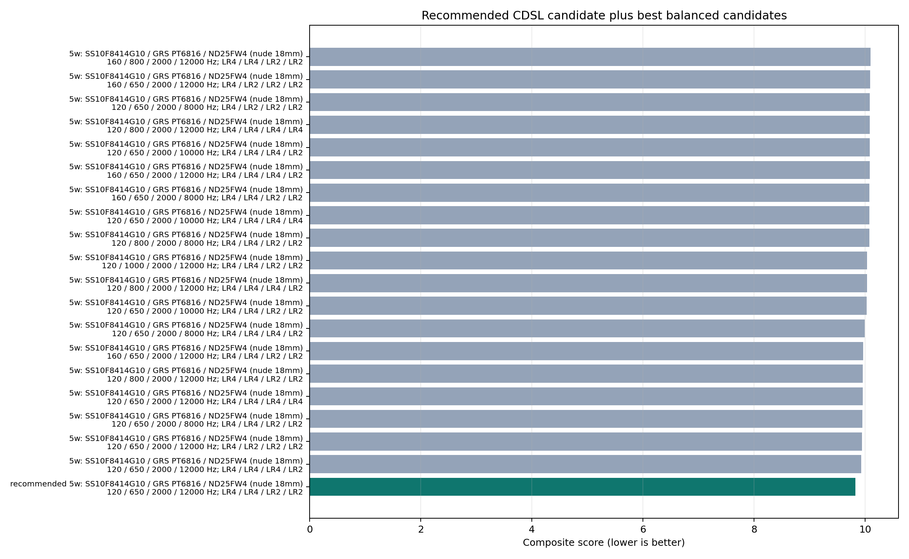
Driver Tradeoff Audit
These rows are measured-driver diagnostics from Juan's baffleless HDF5 data before synthetic crossover summation. They explain the upper-band tradeoff: GRS is closest to a clean dipole shape, L10NEO and the 10F ScanSpeaks provide more 30-to-60 separation, and the dual-ScanSpeak split is kept as an experimental finalist because it adds a crossover between two near-identical radiators.
| Driver | Band | Front Dipole RMS | Rear Dipole RMS | 30-60 Median | 30-60 P10 | Rear0-Front0 | Front90-Front0 |
|---|---|---|---|---|---|---|---|
| L22MG (nude) | 650-2000 Hz | 4.41 | 2.10 | 7.51 | 4.95 | -0.75 | -14.52 |
| L22MG (nude) | 2-7 kHz | 7.42 | 8.02 | 4.21 | -2.88 | -7.92 | -19.26 |
| L22MG (nude) | 2-10 kHz | 7.23 | 7.58 | 3.93 | -3.46 | -7.52 | -17.91 |
| GRS PT6816 | 650-2000 Hz | 0.63 | 0.25 | 5.34 | 5.13 | -0.53 | -37.91 |
| GRS PT6816 | 2-7 kHz | 1.46 | 1.20 | 5.87 | 4.93 | -0.42 | -35.39 |
| GRS PT6816 | 2-10 kHz | 1.73 | 1.72 | 6.05 | 5.06 | -0.45 | -34.87 |
| L10NEO | 650-2000 Hz | 0.84 | 1.93 | 5.25 | 4.09 | -2.00 | -17.01 |
| L10NEO | 2-7 kHz | 7.18 | 4.27 | 11.23 | 7.35 | -3.15 | -16.97 |
| L10NEO | 2-10 kHz | 6.75 | 4.62 | 10.99 | 6.42 | -3.44 | -17.12 |
| SS10F8414G10 | 650-2000 Hz | 1.34 | 0.50 | 5.80 | 5.46 | -0.47 | -24.80 |
| SS10F8414G10 | 2-7 kHz | 5.97 | 4.51 | 9.94 | 5.78 | -2.81 | -20.33 |
| SS10F8414G10 | 2-10 kHz | 5.99 | 5.00 | 10.15 | 5.62 | -3.25 | -20.17 |
| SS10F8424G00 | 650-2000 Hz | 2.03 | 0.46 | 6.19 | 5.78 | -0.39 | -25.10 |
| SS10F8424G00 | 2-7 kHz | 5.22 | 5.37 | 8.74 | 5.61 | -4.63 | -23.24 |
| SS10F8424G00 | 2-10 kHz | 5.60 | 6.02 | 9.18 | 5.91 | -4.80 | -21.10 |
| MU10RB-SL | 650-2000 Hz | 0.94 | 2.58 | 5.10 | 3.73 | -1.30 | -15.90 |
| MU10RB-SL | 2-7 kHz | 6.28 | 4.37 | 10.39 | 8.55 | -3.38 | -18.34 |
| MU10RB-SL | 2-10 kHz | 5.81 | 5.22 | 10.21 | 6.80 | -3.95 | -18.75 |
| ND25FW4 (nude 18mm) | 650-2000 Hz | 1.11 | 0.39 | 5.75 | 5.34 | -0.25 | -25.30 |
| ND25FW4 (nude 18mm) | 2-7 kHz | 1.82 | 0.91 | 5.76 | 4.95 | -0.77 | -28.12 |
| ND25FW4 (nude 18mm) | 2-10 kHz | 1.88 | 1.12 | 5.64 | 4.38 | -0.85 | -26.85 |
Distortion and SPL evidence comes from measurements/juan/UMs desnudos/contexto.txt and its associated screenshots:
- Juan's screenshot notes rank 8424 distortion/SPL best, 8414 close behind, and MU10 worst among the 8424/8414/MU10 upper-mid comparison.
- Raw REW .mdat THD extraction adds L10NEO to the comparison and does not support describing L10NEO as worse-distortion than the ScanSpeak pair.
- The same notes flag 8424 rear-side directivity and high-angle order as weaker than 8414, especially above 2 kHz.
- GRS is treated as the measured dipole/directivity-order reference, but it does not provide the largest 30-to-60 separation above 2 kHz.
- L10NEO remains a high-separation alternate; it is not selected in the balanced primary due to the composite directivity/crossover score, not because of worse raw THD evidence.
Raw REW THD / SPL Audit
THD and measurement level are extracted directly from the front 0-degree REW .mdat files, not from screenshots.
The table shows each driver's fundamental SPL during the distortion sweep plus REW's stored THD trace.
This avoids comparing a low-level distortion sweep against a high-level one.
| Driver | Sample | Band | Fund SPL Med | Fund SPL P10 | Fund SPL P90 | THD Med dB | THD Med | THD P90 |
|---|---|---|---|---|---|---|---|---|
| L10NEO | A | 2-7 kHz | 86.59 | 84.32 | 87.87 | -56.11 | 0.157% | 0.207% |
| L10NEO | A | 2-10 kHz | 86.02 | 82.63 | 87.81 | -55.95 | 0.159% | 0.224% |
| SS10F8414G10 | single | 2-7 kHz | 83.55 | 82.73 | 84.25 | -54.16 | 0.196% | 0.325% |
| SS10F8414G10 | single | 2-10 kHz | 83.41 | 82.41 | 84.24 | -54.16 | 0.196% | 0.370% |
| SS10F8424G00 | sn074 | 2-7 kHz | 84.44 | 83.02 | 86.33 | -54.74 | 0.183% | 0.238% |
| SS10F8424G00 | sn074 | 2-10 kHz | 84.17 | 82.93 | 86.23 | -54.81 | 0.182% | 0.251% |
| SS10F8424G00 | SN086 | 2-7 kHz | 84.72 | 83.33 | 86.67 | -55.06 | 0.177% | 0.255% |
| SS10F8424G00 | SN086 | 2-10 kHz | 84.52 | 83.35 | 86.52 | -55.12 | 0.175% | 0.276% |
| MU10RB-SL | A | 2-7 kHz | 82.90 | 80.67 | 84.61 | -44.72 | 0.581% | 0.718% |
| MU10RB-SL | A | 2-10 kHz | 82.34 | 78.59 | 84.33 | -44.59 | 0.589% | 0.738% |
- Raw REW .mdat THD was extracted from each driver's front 0-degree measurement; harmData[0] is treated as REW's THD trace and harmData[1] as the fundamental SPL trace.
- In the 2-7 kHz THD band, L10NEO's median fundamental SPL is 86.6 dB (+3.0 dB vs SS10F8414G10 single, +1.9 dB vs SS10F8424G00 SN086, +3.7 dB vs MU10RB-SL A), so it was not measured at a lower level than the ScanSpeak references.
- L10NEO 2-7 kHz median THD is 0.157% (-56.1 dB), which is not worse than the available 8414/8424 raw REW THD traces.
- These are not perfectly level-matched sweeps; distortion rankings should be treated as measured-at-level evidence, not normalized maximum-SPL evidence.
L10NEO vs ScanSpeak
- Raw REW evidence does not favor ScanSpeak on THD: L10NEO is 0.157% median THD at 86.6 dB SPL in 2-7 kHz, while the best available ScanSpeak trace is SS10F8424G00 SN086 at 0.177% and 84.7 dB SPL.
- The selected non-L10 candidate wins only on the weighted acoustic search: score 9.83 vs best L10NEO score 10.51, front dipole RMS 1.69 vs 1.94 dB, XO mismatch 7.58 vs 8.49 dB, and 30-60 separation 6.34 vs 7.28 dB.
- Conclusion: L10NEO must not be rejected on distortion/SPL evidence; any ScanSpeak selection is a directivity/crossover integration choice under the current measured polar data.
Effective System THD
Effective THD is estimated from the filtered front 0-degree driver contributions. Only drivers with usable REW THD traces contribute distortion data, and harmonic pressures are combined incoherently. The coverage column shows what fraction of the weighted fundamental contribution has THD evidence in each band.
| Band | Weighted THD | P90 THD | Known Coverage | Front0 SPL Med | Known Drivers | Missing Drivers |
|---|---|---|---|---|---|---|
| 1-7 kHz | 0.077% | 0.128% | 0.38 | 75.98 | SS10F8414G10 | L26RO4Y, L22MG (nude), GRS PT6816, ND25FW4 (nude 18mm) |
| 2-7 kHz | 0.071% | 0.123% | 0.30 | 76.01 | SS10F8414G10 | L26RO4Y, L22MG (nude), GRS PT6816, ND25FW4 (nude 18mm) |
| 2-10 kHz | 0.061% | 0.116% | 0.25 | 76.03 | SS10F8414G10 | L26RO4Y, L22MG (nude), GRS PT6816, ND25FW4 (nude 18mm) |
| 7-10 kHz | 0.013% | 0.021% | 0.03 | 76.09 | SS10F8414G10 | L26RO4Y, L22MG (nude), GRS PT6816, ND25FW4 (nude 18mm) |
Chosen Drivers
| Role | Driver | Passband Hz | Gain dB | Delay ms | Polarity | Rationale |
|---|---|---|---|---|---|---|
| Low | L26RO4Y | 70-120 | -7.79 | +0.000 | normal | Best measured low-frequency candidate, but captured in a cylindrical baffle. |
| Lower mid | L22MG (nude) | 120-650 | +16.93 | -1.375 | normal | Strong low-mid bridge with nude front/rear data and useful coverage below 500 Hz. |
| Mid | SS10F8414G10 | 650-2000 | -3.30 | -0.690 | normal | Good directivity order with local notes rating distortion close to the 8424. |
| High/directivity band | GRS PT6816 | 2000-12000 | -6.10 | -0.730 | inverted | Best local constant-directivity and front/rear symmetry reference. |
| Top | ND25FW4 (nude 18mm) | 12000-20000 | +8.70 | -0.700 | normal | Treble extension candidate; measured 2-10 kHz pattern is wider than the 10 cm candidates. |
DSP / IIR Filters
Cascaded Filter Topology
Architecture: cascaded mixed-order Linkwitz-Riley split tree with shared high-pass carryover (LR4 / LR4 / LR2 / LR2). The higher branch of each split carries the previous high-pass stages into the next split, so later drivers include the first-stage and intermediate high-pass filters before their own branch filters.
Input
+-- LR4 HP 70 Hz (2 biquads, global boundary)
+-- LR4 split @ 120 Hz
+-- LR4 LP 120 Hz (2 biquads) -> L26RO4Y
+-- LR4 HP 120 Hz (2 biquads) -> next split
+-- LR4 split @ 650 Hz
+-- LR4 LP 650 Hz (2 biquads) -> L22MG (nude)
+-- LR4 HP 650 Hz (2 biquads) -> next split
+-- LR2 split @ 2000 Hz
+-- LR2 LP 2000 Hz (1 biquad) -> SS10F8414G10
+-- LR2 HP 2000 Hz (1 biquad, invert downstream branch) -> next split
+-- LR2 split @ 12000 Hz
+-- LR2 LP 12000 Hz (1 biquad) -> GRS PT6816
+-- LR2 HP 12000 Hz (1 biquad) -> ND25FW4 (nude 18mm)
| Stage | Driver | Passband Hz | Global HP | Inherited HP | Own HP | Own LP | XO Total | Flat-EQ | Effective Total |
|---|---|---|---|---|---|---|---|---|---|
| 1 | L26RO4Y | 70-120 | 2 | 0 | 0 | 2 | 4 | 0 | 4 |
| 2 | L22MG (nude) | 120-650 | 2 | 0 | 2 | 2 | 6 | 1 | 7 |
| 3 | SS10F8414G10 | 650-2000 | 2 | 2 | 2 | 1 | 7 | 3 | 10 |
| 4 | GRS PT6816 | 2000-12000 | 2 | 4 | 1 | 1 | 8 | 4 | 12 |
| 5 | ND25FW4 (nude 18mm) | 12000-20000 | 2 | 5 | 1 | 0 | 8 | 1 | 9 |
- Shared-tree count assumes the DSP can route a high-pass bus into the next split stage.
- Standalone-channel count is what is exported per driver when each output channel must contain all inherited upstream filters.
- LR2 splits use one Q=0.5 biquad per edge and invert the next/downstream branch; LR4 splits use two Q=0.7071 biquads per edge without a required polarity inversion.
- Flat-EQ is capped after crossover filters so every exported driver channel stays at or below 15 total biquads.
- Gain, delay, and polarity are not counted as biquads.
Crossovers are mixed LR2/LR4 cascades: LR2 uses one Q=0.5 biquad per edge and inverts the downstream branch, while LR4 uses two Q=0.7071 biquads per edge.
The flat-EQ filters are a sparse summed-response least-squares fit assigned per driver.
They use 9 active correction filters out of 24 candidates;
the unconstrained full fit would keep about 23 filters above the pruning threshold.
The hard export limit is 15 biquads per driver, including cascaded crossover filters before flat-EQ.
This is still a simulated equalization pass, not a final measured-room/prototype EQ.
| Driver | Source | Type | Fc Hz | Q | Gain dB |
|---|---|---|---|---|---|
| L26RO4Y | LR4 global boundary high-pass | highpass | 70.0 | 0.707 | +0.00 |
| L26RO4Y | LR4 global boundary high-pass | highpass | 70.0 | 0.707 | +0.00 |
| L26RO4Y | LR4 branch low-pass | lowpass | 120.0 | 0.707 | +0.00 |
| L26RO4Y | LR4 branch low-pass | lowpass | 120.0 | 0.707 | +0.00 |
| L22MG (nude) | LR4 global boundary high-pass | highpass | 70.0 | 0.707 | +0.00 |
| L22MG (nude) | LR4 global boundary high-pass | highpass | 70.0 | 0.707 | +0.00 |
| L22MG (nude) | LR4 branch high-pass | highpass | 120.0 | 0.707 | +0.00 |
| L22MG (nude) | LR4 branch high-pass | highpass | 120.0 | 0.707 | +0.00 |
| L22MG (nude) | LR4 branch low-pass | lowpass | 650.0 | 0.707 | +0.00 |
| L22MG (nude) | LR4 branch low-pass | lowpass | 650.0 | 0.707 | +0.00 |
| L22MG (nude) | flat-EQ | peaking | 500.0 | 1.000 | -5.96 |
| SS10F8414G10 | LR4 global boundary high-pass | highpass | 70.0 | 0.707 | +0.00 |
| SS10F8414G10 | LR4 global boundary high-pass | highpass | 70.0 | 0.707 | +0.00 |
| SS10F8414G10 | LR4 cascaded upstream high-pass | highpass | 120.0 | 0.707 | +0.00 |
| SS10F8414G10 | LR4 cascaded upstream high-pass | highpass | 120.0 | 0.707 | +0.00 |
| SS10F8414G10 | LR4 branch high-pass | highpass | 650.0 | 0.707 | +0.00 |
| SS10F8414G10 | LR4 branch high-pass | highpass | 650.0 | 0.707 | +0.00 |
| SS10F8414G10 | LR2 branch low-pass | lowpass | 2000.0 | 0.500 | +0.00 |
| SS10F8414G10 | flat-EQ | peaking | 1450.0 | 1.000 | +4.59 |
| SS10F8414G10 | flat-EQ | peaking | 1800.0 | 1.000 | -2.84 |
| SS10F8414G10 | flat-EQ | peaking | 700.0 | 1.000 | -5.79 |
| GRS PT6816 | LR4 global boundary high-pass | highpass | 70.0 | 0.707 | +0.00 |
| GRS PT6816 | LR4 global boundary high-pass | highpass | 70.0 | 0.707 | +0.00 |
| GRS PT6816 | LR4 cascaded upstream high-pass | highpass | 120.0 | 0.707 | +0.00 |
| GRS PT6816 | LR4 cascaded upstream high-pass | highpass | 120.0 | 0.707 | +0.00 |
| GRS PT6816 | LR4 cascaded upstream high-pass | highpass | 650.0 | 0.707 | +0.00 |
| GRS PT6816 | LR4 cascaded upstream high-pass | highpass | 650.0 | 0.707 | +0.00 |
| GRS PT6816 | LR2 branch high-pass | highpass | 2000.0 | 0.500 | +0.00 |
| GRS PT6816 | LR2 branch low-pass | lowpass | 12000.0 | 0.500 | +0.00 |
| GRS PT6816 | flat-EQ | peaking | 4500.0 | 1.000 | +7.06 |
| GRS PT6816 | flat-EQ | peaking | 3500.0 | 1.000 | -7.01 |
| GRS PT6816 | flat-EQ | peaking | 11000.0 | 1.000 | +8.00 |
| GRS PT6816 | flat-EQ | peaking | 2800.0 | 1.000 | +6.50 |
| ND25FW4 (nude 18mm) | LR4 global boundary high-pass | highpass | 70.0 | 0.707 | +0.00 |
| ND25FW4 (nude 18mm) | LR4 global boundary high-pass | highpass | 70.0 | 0.707 | +0.00 |
| ND25FW4 (nude 18mm) | LR4 cascaded upstream high-pass | highpass | 120.0 | 0.707 | +0.00 |
| ND25FW4 (nude 18mm) | LR4 cascaded upstream high-pass | highpass | 120.0 | 0.707 | +0.00 |
| ND25FW4 (nude 18mm) | LR4 cascaded upstream high-pass | highpass | 650.0 | 0.707 | +0.00 |
| ND25FW4 (nude 18mm) | LR4 cascaded upstream high-pass | highpass | 650.0 | 0.707 | +0.00 |
| ND25FW4 (nude 18mm) | LR2 cascaded upstream high-pass | highpass | 2000.0 | 0.500 | +0.00 |
| ND25FW4 (nude 18mm) | LR2 branch high-pass | highpass | 12000.0 | 0.500 | +0.00 |
| ND25FW4 (nude 18mm) | flat-EQ | peaking | 14000.0 | 1.000 | -3.56 |
Flatness Check
Target flatness is evaluated on the synthetic front 0-degree sum. The raw gated response still contains narrow features that should not be over-corrected from this preliminary phase model. The more meaningful target here is the smoothed trend before prototype measurement. Primary flatness target met under the 15-biquad-per-driver cap: no.
| Stage | Smoothing | Band | Median dB | Min Err | Max Err | Peak-Peak | RMS Err |
|---|---|---|---|---|---|---|---|
| Before flat-EQ | raw | 80-18k | 78.02 | -5.89 | 6.92 | 12.81 | 2.76 |
| Before flat-EQ | raw | 200-10k | 78.69 | -5.35 | 6.25 | 11.61 | 2.66 |
| Before flat-EQ | raw | 2-10k | 79.61 | -6.28 | 5.33 | 11.61 | 2.12 |
| Before flat-EQ | one_sixth_octave | 80-18k | 78.03 | -4.55 | 6.73 | 11.28 | 2.73 |
| Before flat-EQ | one_sixth_octave | 200-10k | 78.65 | -5.18 | 6.11 | 11.28 | 2.66 |
| Before flat-EQ | one_sixth_octave | 2-10k | 79.61 | -6.13 | 5.15 | 11.28 | 2.11 |
| Before flat-EQ | one_third_octave | 80-18k | 78.03 | -4.12 | 6.26 | 10.39 | 2.65 |
| Before flat-EQ | one_third_octave | 200-10k | 78.67 | -4.77 | 5.62 | 10.39 | 2.61 |
| Before flat-EQ | one_third_octave | 2-10k | 79.61 | -4.14 | 4.68 | 8.82 | 2.00 |
| After flat-EQ | raw | 80-18k | 75.99 | -5.00 | 2.67 | 7.67 | 0.80 |
| After flat-EQ | raw | 200-10k | 75.94 | -3.90 | 1.95 | 5.85 | 0.46 |
| After flat-EQ | raw | 2-10k | 76.04 | -4.01 | 1.84 | 5.85 | 0.62 |
| After flat-EQ | one_sixth_octave | 80-18k | 76.00 | -2.82 | 2.16 | 4.98 | 0.69 |
| After flat-EQ | one_sixth_octave | 200-10k | 75.94 | -2.76 | 1.30 | 4.06 | 0.40 |
| After flat-EQ | one_sixth_octave | 2-10k | 76.06 | -2.88 | 1.18 | 4.06 | 0.52 |
| After flat-EQ | one_third_octave | 80-18k | 75.99 | -1.88 | 1.83 | 3.71 | 0.52 |
| After flat-EQ | one_third_octave | 200-10k | 75.96 | -0.43 | 0.61 | 1.05 | 0.24 |
| After flat-EQ | one_third_octave | 2-10k | 76.04 | -0.42 | 0.53 | 0.95 | 0.22 |
Model Risks
- L26RO4Y source is a 25 cm deep / 32 cm diameter cylindrical-baffle measurement, not a nude baffleless capture.
- Processed phase was reconstructed from separately loaded measurements after per-measurement impulse peak alignment; synthetic complex summation is therefore preliminary.
- Rear polarity convention is inherited from the measurement files and existing 0-180 mapping; it has not been independently validated with raw impulse polarity.
- Absolute SPL and maximum-SPL claims remain limited by the available local evidence; raw THD is extracted for available 0-degree REW files but not normalized to matched drive level.
- DI and beamwidth figures match the existing repo convention and use front-horizontal data only, not a full 3D power response.
- Vertical-plane beaming and pseudo-baffle diffraction from the final stacked mounting geometry are not modeled.
- The 10 kHz/top-octave behavior is treated as suspect validation territory; search and comparison weights emphasize 2-10 kHz and do not let a narrow top-octave feature decide the design.
Mounting Geometry
The suspended-driver data is most reliable for choosing drivers and horizontal crossover behavior. It is not a complete model of the final physical stack. Vertically aligned drivers can create vertical lobing, and a narrow support spine or neighboring driver motors can behave like a thin diffracting baffle.
- The synthetic HDF5 is a horizontal 0-180 degree sum of separately suspended driver measurements; it does not model vertical-plane lobing from center-to-center spacing.
- Non-GRS cone/dome drivers are assumed approximately axisymmetric when reasoning about vertical behavior, but the GRS planar is not axisymmetric and needs measured or modeled vertical data.
- A first-order vertical lobing model is feasible if driver coordinates and acoustic-center offsets are supplied, but it would only cover source interference, not pseudo-baffle diffraction.
- The pseudo-baffle/diffraction from a vertical mounting spine, neighboring motor structures, wiring, and driver frames is not identifiable from the current individual-driver HDF5 data; it needs CAD/BEM or assembly measurements.
- Recommendation: use this synthetic model for driver/filter shortlisting, then measure the actual stacked fixture horizontally and vertically before treating the crossover as final.
Synthetic Acoustic Sum
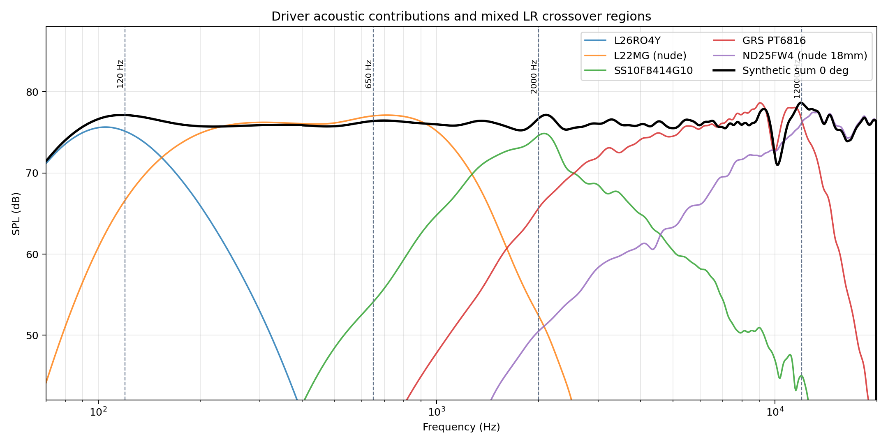
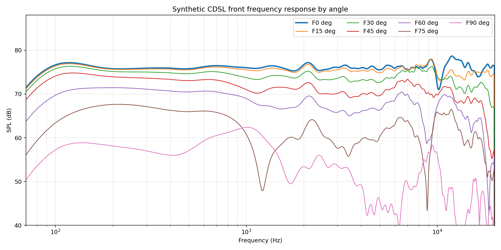
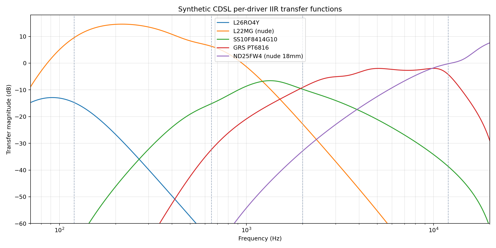
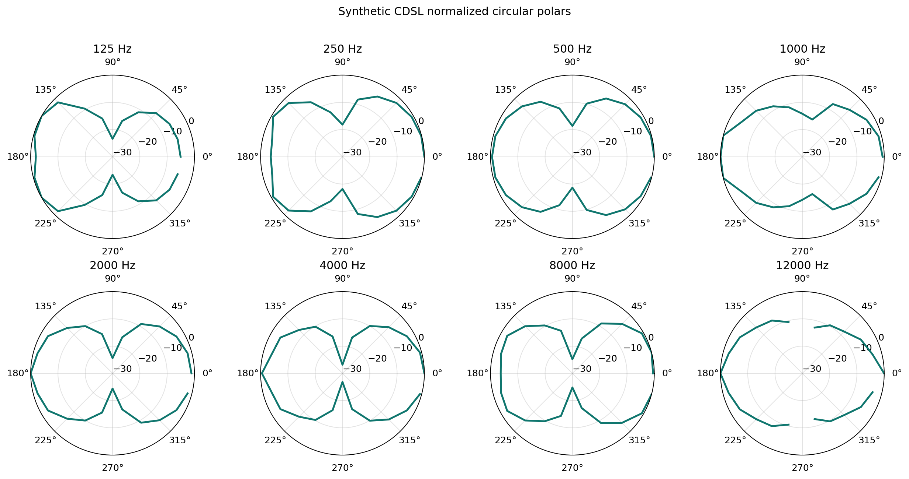
Directivity Results
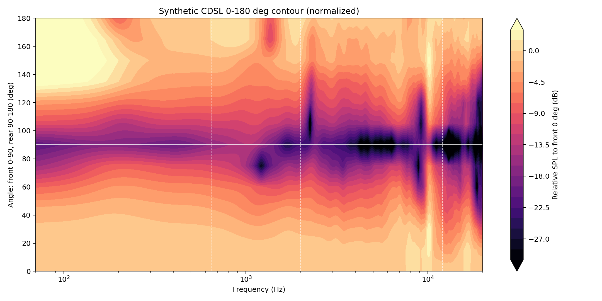
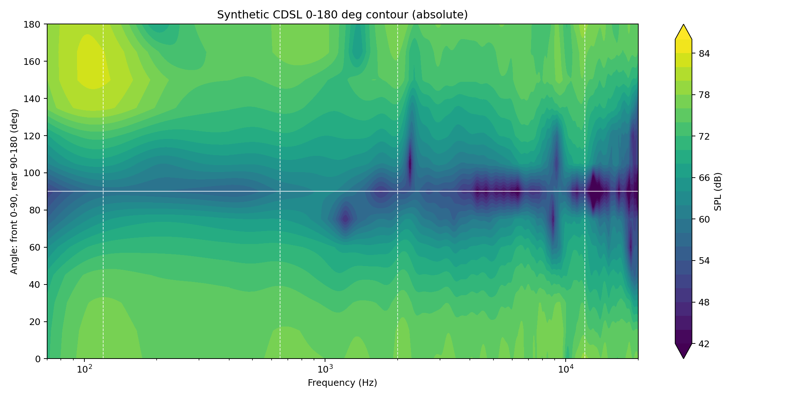
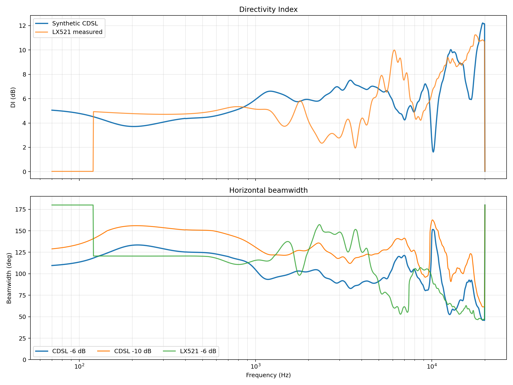
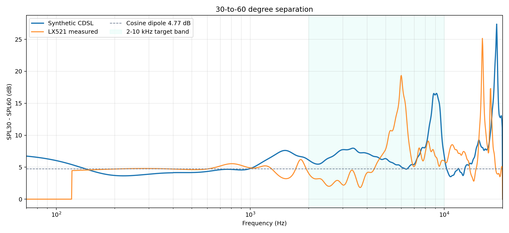
Upper-mid side-feature diagnostic: in the 1.6-3.2 kHz region, front 90-degree response reaches -25.9 dB relative to front 0 degrees at 1697 Hz. This is a side null, not a 90-degree SPL peak. Filling it would reduce the dipole null and the intended CDSL separation.
30-vs-60 Metric
Metric definition: Delta30-60 = SPL30 - SPL60. A cosine dipole gives 4.77 dB; higher values above 2 kHz indicate more separation between the near-ear and far-ear angles for CDSL/crosstalk-cancellation use.
| Band | CDSL median dB | LX521 median dB | CDSL mean DI dB | CDSL median -6 dB beamwidth |
|---|---|---|---|---|
| 70-200 Hz | 5.47 | 0.00 | 4.46 | 118 |
| 200-800 Hz | 4.14 | 4.76 | 4.31 | 125 |
| 800-2500 Hz | 6.01 | 4.86 | 6.00 | 102 |
| 2-10 kHz | 6.68 | 5.15 | 6.25 | 94 |
| 10-20 kHz | 6.35 | 7.15 | 8.06 | 70 |
Comparison To LX521
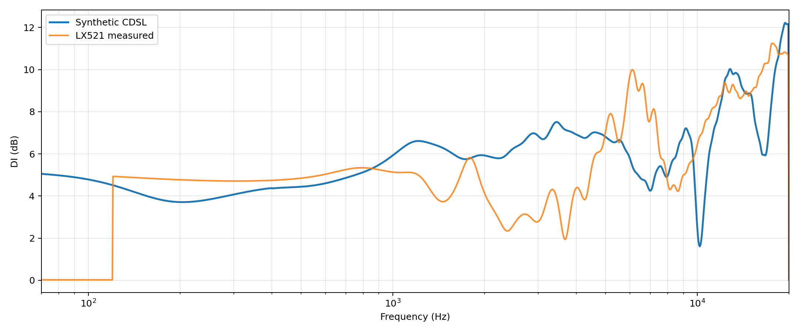
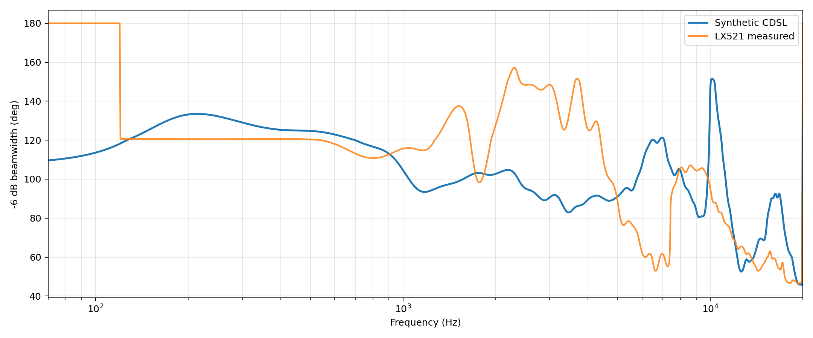

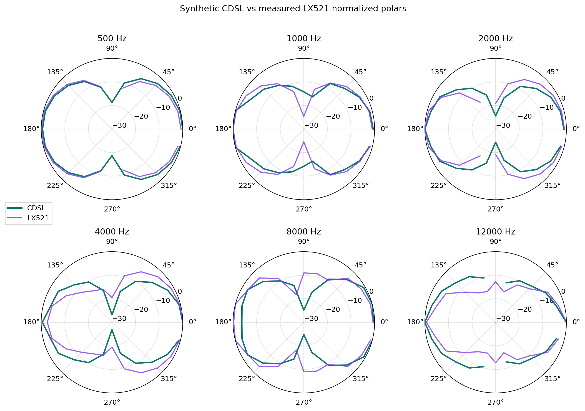
Open Juan LX521.4 measured system page
Interactive Views
Reproducibility
Generated: 2026-05-21T16:56:00+00:00
Inputs: output/data/polar_data_juan_baffleless.h5, output/data/polar_data_lx521_system.h5
Synthetic HDF5: output/data/polar_data_juan_cdsl_synthetic.h5
Smoothing: None; gate: 0.5 ms / 3.0 ms.
This is a synthetic, equalized pressure sum. It is not a replacement for a measured prototype with final driver spacing and baffle geometry.